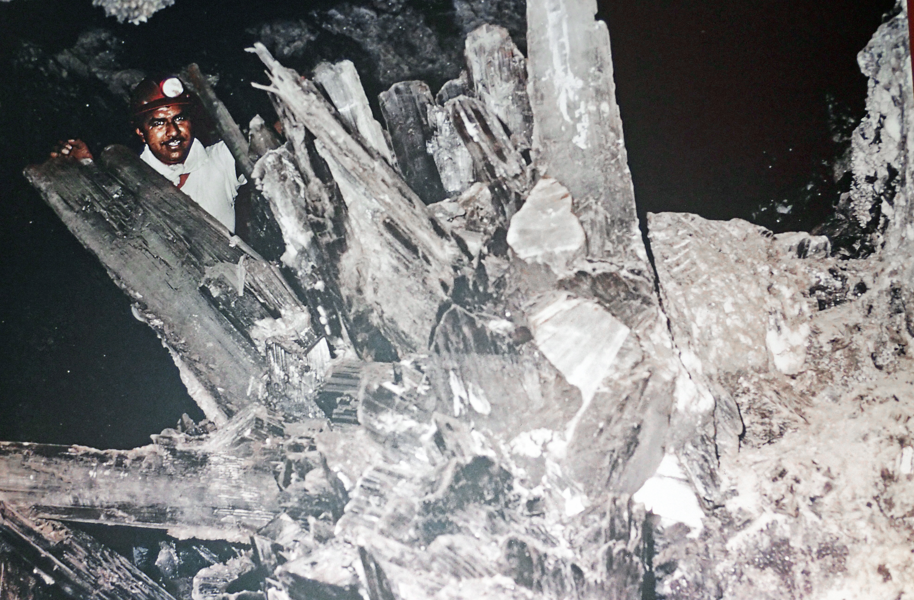

SCP-409

- Item nº:
- SCP-409
- Classe do objeto:
- Keter
Procedimentos Especiais de Contenção:
Nenhum contato físico pode ser feito com o SCP-409 por nenhum motivo. Qualquer coisa que entre em contato físico com o SCP-409 deve ser imediatamente colocada em quarentena, junto com todos os materiais usados no transporte do sujeito. O SCP-409 deve ser mantido o tempo todo em um estojo de granito. Todo transporte do SCP-409 deve ser feito em um recipiente de granito selado. Os resíduos do efeito do SCP-409 devem ser selados em recipientes de granito, junto com todas as ferramentas usadas para transportar os resíduos para os recipientes.
Descrição:
O SCP-409 se parece com um grande cristal de quartzo com aproximadamente 1,5 m (5 pés) de altura e 0,6 m (2 pés) de largura. Quaisquer objetos que entrem em contato com o SCP-409 começarão a se cristalizar após três horas. Esse efeito ocorre em qualquer material, exceto granito. A cristalização se espalha a aproximadamente 2,5 cm (1 pol) por minuto e converte o objeto ou organismo inteiro, por dentro e por fora. Os sujeitos relatam que esse efeito é extremamente doloroso e semelhante a uma queimadura por congelamento. Após a cristalização completa, o objeto começa a fazer estalos e rangidos por aproximadamente vinte minutos, antes de explodir em milhares de fragmentos com grande força.
Tudo o que for tocado por um fragmento, ou que o tocar, começará imediatamente a se cristalizar. Nada, no momento, é capaz de reverter o efeito em matéria orgânica, incluindo a amputação das áreas afetadas. A matéria inorgânica só se cristaliza por alguns centímetros ao redor do ponto de contato. O SCP-409 foi recuperado em [EXPURGADO], sob uma pilha de cacos de cristal com vários pés de profundidade. As perdas de pessoal durante a recuperação foram altas.
Adendo 409-1: Por sugestão do Dr. [500-0021D], o Sujeito 409-D5 foi exposto aos efeitos do SCP-409 e deixado para ficar severamente "cristalizado". Depois disso, foi tratado com o SCP-500, e uma recuperação completa foi obtida em 9 dias. O sujeito relatou que continuou sentindo dor nas partes do corpo que haviam sido "cristalizadas", mesmo após o tempo estimado de recuperação. A dor desapareceu 13 dias após o tratamento do sujeito. Não se sabe se o efeito da dor era psicológico ou real durante os 4 dias intermediários.
Adendo 409-2: Testes extensivos não produziram nenhuma informação sobre por que a cristalização ocorre. O SCP-409 e os fragmentos criados por ele são indistinguíveis de qualquer outro cristal de quartzo. O efeito parece semelhante ao de um cristal-semente, em que uma formação cristalina preexistente é adicionada a uma solução, fazendo o cristal "crescer". O SCP-409, no entanto, parece fazer isso com toda matéria sólida e não precisa permanecer em contato. Como isso é feito, por que o SCP-409 é único entre todos os outros cristais de quartzo e por que o granito é o único material imune continuam desconhecidos.